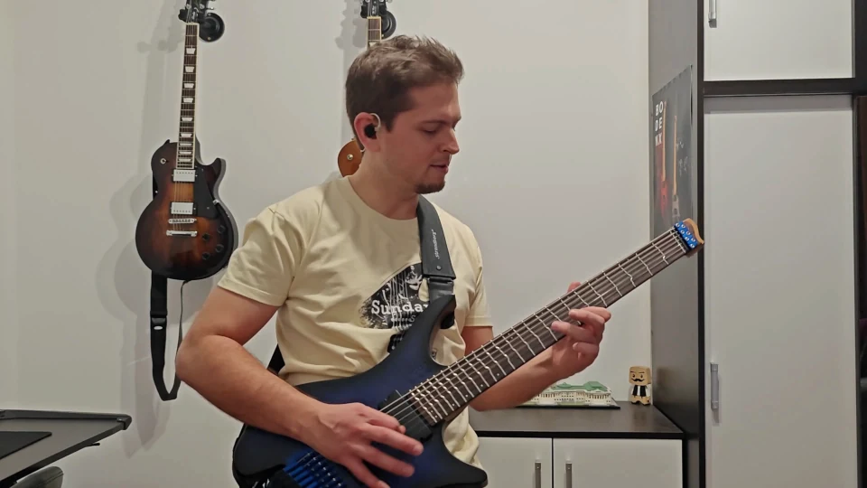

01 — code
Mostly Kotlin, mostly open source
Libraries, apps and the occasional article about how they were made.
02 — apps
Runs in your browser
Web builds of my Compose Multiplatform projects. No install, no sign‑up, just open the link.
Kubriko
Engine showcaseMy 2D game engine shown off through demos, games and tech samples.
↗Tesselar
3D experimentA real-time 3D world built on Kubriko, with weather, clouds, fog and a day–night cycle.
↗
Campfire
Lyrics and chordsA handpicked song library with transposition and support for custom setlist creation.
↗
03 — music
Sunday Songs
In 2023 I challenged myself to learn and record a new cover song every week: 53 weeks, 53 songs, from the artists and genres I love.

week 53 / 53
04 — contact
Say hi
Work, music, or a bug you found in one of my apps: the inbox is open.